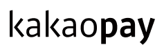
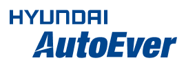
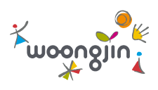
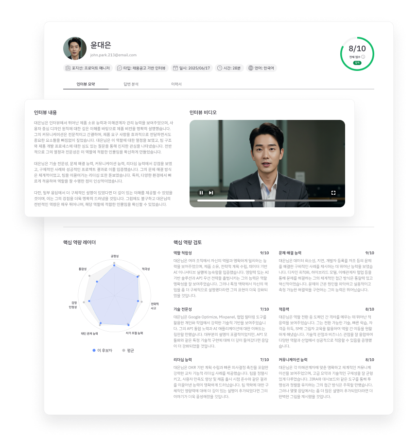

500개 이상의 팀이 신뢰하는 선택



채용팀이 원하는 단 세 가지 — 더 빠르게, 더 적은 비용으로, 더 정확하게.
수천 명의 지원자를 AI가 동시에 검증.
1차 서류 검토 시간이 사라집니다.
잘못된 채용 한 건은 연봉의 30%.
검증 자동화로 실패 비용을 줄입니다.
이력서 주장과 실제 역량을 대조.
과장·허위를 데이터로 잡아냅니다.
AI가 써주는 이력서 속에서 진짜를 가려내지 못하면 — 그대로 비용이 됩니다.
넓게 쏟아진 지원자를 AI가 좁혀, 단 하나의 결정만 사람에게 남깁니다.
AI가 검증을 끝내면 — 채용팀은 이 화면만 보고 결정하면 됩니다.

이 리포트가 만들어지기까지, 단 3단계
온라인으로 AI 면접에 응시,
설치 없이 이력서까지 제출.
이력서의 주장과 실제 역량을
대조해 자동으로 검증·채점.
검증된 핵심 인재 리포트만
채용팀이 받아 판단합니다.
전체 지원자 검증 완료
잘못된 채용(미스매치) 감소
허위·과장 기재 적발률
채용팀의 신뢰도, 그리고 후보자의 만족도까지 — 둘 다 잡았습니다.
“300장을 넘기던 1차 검토가 사라졌습니다. 이제 우리는 검증된 후보 20명과의 ‘대화’에만 집중합니다.”
“이력서 너머의 진짜 실력이 보입니다. 입사 후 ‘기대와 달랐다’는 미스매치가 눈에 띄게 줄었어요.”
“긴장되는 대면 면접보다 편했어요. 제 역량을 충분히 보여줄 수 있어 오히려 공정하다고 느꼈습니다.”
5분이면 충분합니다. 지금 무료로 확인하세요.